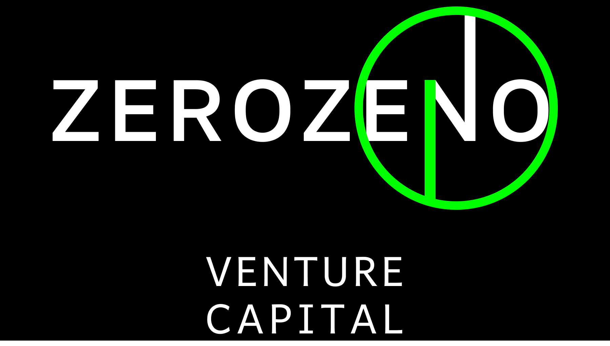

Venture capital firm

Stage: Raising capital
Fund size: $10 million
Check size: $100,000 - $250,000
Target valuation: $750,000 - 2.5 million
Geography: India
Primary thesis: Biotechnology
Secondary thesis: Artificial intelligence from biological intelligence
LPs:
Email: manonthemoon13131@gmail.com
ZEROZENO was ideated in 2022 as ZEROZENO NFT collection to help students. ZEROZENO helped students mint NFTs (non-fungible tokens) to pay for their education. 80% of an NFT's sale price was transferred to the student minter. 20% was taken as fee to fund higher education of ZEROZENO founder Noorul Ali. This NFT collection never came to be but highlights the founding principle of ZEROZENO: give youth money to achieve dreams.
ZEROZENO Venture Capital takes shares in the works of youth capitalists. The firm funds founders distorting reality by the force of sheer will. Visions so powerful, founders so stubbon, the world has no choice but to change. Founder minds hellbent on moulding the world in their images. I am honored to know these beautiful minds. Minds who shape humanity's destiny and chart humankind's future through the next 100 years.
The World Is Yours
Startups seem to be zero from the outside for a long time (ZERO). Suddenly, they jump and reach one (ONE, reverse of ENO). This inflection point from 0 to 1, this unpredictable path (Z E R O then O N E), irrational against all odds, this differentiates startup from business. A startup is expected to fail. A startup is expected to stay at zero. ZEROZENO captures a startup defying all odds and reaching one with an unexpected jump. The startup reaches O of ENO and charts a reverse (unpredictable) path to ONE. This jump starts up the startup. This jump is what a startup lives for.
ZEROZENO is also named for Zeno's Dichotomy paradox. The reader is left to wonder why.
Exponential growth also differentiates startup from business. Somewhere in the growth of a startup, exponential growth must occur. Maybe in user growth, when existing users overwhelmingly recommend or attract more users. Maybe in revenue growth, when small initial sales snowball into bigger and bigger sales, like addictive apps. Maybe in network effects, where your product is the backbone of new applications. A startup must taste that sweet addictive nectar of exponential growth to be more than just a business.
Noorul Ali (GP) runs 3 startups (ASBL, ONITO and Restorever) and one non-profit (Research Engine).
ZEROZENO will not ever invest in startups with Noorul Ali's ownership in personal capacity, like the startups above. ZEROZENO and Noorul Ali's ownership are mutually exclusive; any startup in which Noorul Ali holds shares cannot take investment from ZEROZENO; any startup in which ZEROZENO invests cannot have shares owned by Noorul Ali. This is to prevent conflicts of interest.
Carry: 0%
Management fees: $20,000 annually (0.2%)